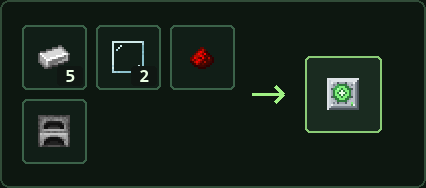
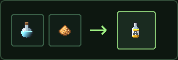

참조 · 0.2.1
블록 및 레시피
모드의 레시피 파일에서 재료를 제작합니다.
생체 작업대

- 3 × 유리
- 5 × 철 주괴
- 1 × 제작대
운반액

- 1 × 물약
- 1 × 설탕
- 1 × 슬라임볼
촉매

- 1 × 네더 사마귀
- 1 × 네더 석영
원심분리기

- 5 × 철 주괴
- 2 × 유리
- 1 × 레드스톤 가루
- 1 × 화로
황금 주사기

- 1 × 주사기
- 3 × 금 주괴
- 1 × 레드스톤 가루
돌연변이 원액

- 1 × 운반액
- 1 × 경험치 병
네더라이트 주사기

- 1 × 황금 주사기
- 2 × 네더라이트 파편
역전 혈청

- 1 × 운반액
- 1 × 발효된 거미 눈
서열 분석기

- 4 × 철 주괴
- 2 × 유리
- 1 × 레드스톤 비교기
- 1 × 망원경
안정제

- 1 × 운반액
- 1 × 발광석 가루
합성기

- 4 × 철 주괴
- 3 × 유리
- 1 × 양조기
- 1 × 레드스톤 가루
주사기

- 1 × 유리병
- 1 × 철 주괴
- 1 × 철 조각